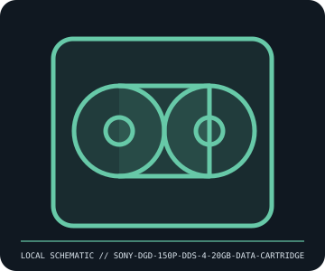

[ REMOVABLE MEDIA // MODEL-SPECIFIC RECORD ]
Sony DGD-150P DDS-4 20 GB Data Cartridge
Sony 4 mm DDS-4 cartridge, 150 m tape generation. This catalog entry distinguishes the removable medium from its drive/reader and calls out model-specific fit and format caveats.

IDENTIFICATION: Transcribe the entire model/part number, capacity, generation and revision from the label or packaging. Confirm the exact host-device manual before inserting or writing.
Format, capacity and compatibility
| Product / part ID | Sony DGD-150P DDS-4 20 GB Data Cartridge |
|---|---|
| Generation / format | Sony 4 mm DDS-4 cartridge, 150 m tape generation |
| Capacity and medium | Sony DGD-150P DDS-4 data cartridge; up to 20 GB native / 40 GB at assumed 2:1 compression. Native capacity is the reliable comparison; compression depends on data and software. |
| Compatibility | Use with a DDS-4-capable 4 mm DAT drive; newer DAT generations may support DDS-4 only where their model-specific compatibility table says so. Older DDS-1/2/3-only drives cannot write this DDS-4 generation. |
| Version and model caveat | DGD-150P is a DDS-4 150 m product code, not the earlier DGD-125P DDS-3 already cataloged. Confirm the drive generation and cleaning instructions; do not extrapolate later DAT-72/DDS-5 support. |
Handling and preservation
Keep in its case, away from dust, smoke, moisture, magnets, and rapid climate changes. Allow media to acclimate after cold transport. Inspect for damage, track loads/errors, and verify a restore; do not touch exposed tape or use a cartridge beyond drive cleaning/error guidance.
- Preserve original packaging, label, acquisition notes and any write-protect state; photograph the media before use.
- Make at least two independent copies of valuable data, verify checksums, and periodically test a restore. A removable cartridge or card alone is not an archival strategy.
Model and version notes
DGD-150P is a DDS-4 150 m product code, not the earlier DGD-125P DDS-3 already cataloged. Confirm the drive generation and cleaning instructions; do not extrapolate later DAT-72/DDS-5 support.
Standards and product-family sources establish the generation; exact model manuals, labels, regional revisions, firmware, interface and host support determine actual interchangeability.
Sources and standards
- Sony DGD-150P DDS-4 product specificationsManufacturer manual archive; search DGD-150P for generation-specific capacity, handling, and storage instructions.
- DDS — Digital Data Storage format reference (SNIA)Industry glossary reference for DDS format generations; drive vendor compatibility lists govern actual interchange.
Manufacturer and standards references are preferred; archival manuals or museum records are identified when products are discontinued. Capacity and compatibility claims are scoped to the specific SKU and generation named above.